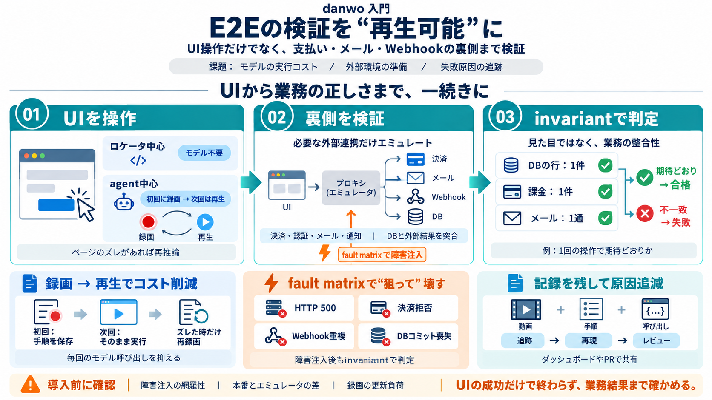

Agentic E2E Testing: What Works in 2026 | NQ Solution
Linear, CI bottleneck reworked, 21 September 2026 Next.js blog, Next.js 16.4, 6 October 2026 Playwright, Release notes…

E2Eの検証を“再生可能”に
UI操作だけで終わらず、支払い・メール・Webhookなどの裏側まで含めて検証するE2E基盤です。
ロケータ中心はモデル不要、agentは録画→再生で呼び出しを削減します。
fault matrix（フォールトマトリクス）で障害を注入し、invariantで判定します。
E2Eの“重さ”
E2EはUI操作に加えて、外部サービスや障害シナリオまで扱うため、環境準備・コスト・再現性が問題になりがちです。
毎回agentで推論すると、実行コストと不安定化が起きやすい。
Stripe/メール/Webhookなどの用意が負担。
壊れた理由・再現条件が残らないと改善が遅れる。
録画と再生で
agentは初回だけ“振付（クリック手順）”を作り、次回以降は録画を再生して、毎回のモデル依存を減らします。
UI→裏側
danwoは、UI操作（ロケータ/agent）から始めて、バックエンド層で業務結果を突合し、判定まで一気通貫にします。
ロケータ中心はモデル不要。agentは録画→再生でコストを抑える（費用最適化）。
必要なときだけ外部プロバイダをエミュレートし、DBと結果をinvariantで検証。
例：1回の操作につき「行は1件・課金は1件・メールは1通」を満たすかを合否にする。
書き方が分岐
danwoは「ロケータ中心」と「agent中心」を用意し、目的とコストに応じて使い分けられます。
UI要素（ラベル/ロール等）で直接操作を定義。基本はモデル呼び出しなしで動く。
自然文で意図を渡し、初回だけモデル/APIキーで録画→次回は再生。録画がズレれば再推論。
必要なときだけ
支払い・認証・メール・通知などは、常時オンではなく必要に応じて有効化し、外部の不整合を見ます。
決済と認証を扱い、UIの成功に隠れた失敗（例：拒否/不整合）まで検出。
メール送信や通知もエミュレートして、期待する成果物が出たか判定。
ローカルのエミュレータとプロキシで扱い、導入時の摩擦を減らす方向性。
合否は“結果の一致”
UIが通っても裏側が壊れることがあるため、テスト後にDBとプロバイダ側の結果を突合して判断します。
例：1操作あたりの作成・更新件数が想定どおりか。
例：課金は1件、メールは1通など、成果物の整合性。
期待不変条件（invariant）が崩れれば失敗として扱い、原因追跡に繋げます。
“狙って”壊す
テストが呼び出した想定イベントに基づき、プロキシ側で障害を注入し、invariantが崩れるかで判定します。
サーバ内部エラーを誘発し、後続処理と整合性を検証。
課金失敗時に、DBと外部結果が矛盾しないかを確認。
重複WebhookやDBコミット喪失などの“壊れ方”を評価。
結果を追える
失敗時に何が起きたかを確認できるよう、手順・動画・呼び出しなどが記録され、PRコメントやダッシュボードで見える設計です。
期待と注意点
danwoは有望ですが、fault matrixの網羅基準や注入粒度、録画の更新コストなどはアプリ次第で差が出ます。
invariantで裏側の正しさを見に行くため、請求・誤メールなどの未然防止に繋がる。
決済/Webhook署名/冪等性などは、本番相当との差が残り得る。
ページ変化が多いプロダクトだと、録画のズレ→再録画がコスト/負荷に影響します。
要点まとめ
UI→外部連携→障害注入→再現性→判定、を同じワークフローでつなぐのがdanwoの価値です。
ロケータはモデル不要、agentは録画→再生。
DBとプロバイダ結果を“業務成果”で検証。
500/決済拒否/重複Webhook/コミット喪失など。
動画・手順・呼び出しを残し、ダッシュボード/PRで共有。
最後に：確認すべきこと
自社の主要フロー（決済・メール・Webhook・DB整合性）に対して、invariantとfault matrixを現実に合わせられるかを見積もるのが安全です。
想定障害がどこまでカバーされるか、粒度と根拠を確認。
特に決済・Webhook（署名/冪等性）で、段階的な本番相当検証も検討。
ページ変化頻度を踏まえ、再録画がどれだけ起きるかを見積もる。
Linear, CI bottleneck reworked, 21 September 2026 Next.js blog, Next.js 16.4, 6 October 2026 Playwright, Release notes…
The 2026.7.10 release note is short. It lists updated packages for `@modelcontextprotocol/server-filesystem@2026.7.10`, …
Tester’s Army e2e has made a loud entrance into test automation in October 2026. Its GitHub repository has passed 10,000…
SANTA BARBARA, Calif., October 30, 2025--(BUSINESS WIRE)--Bitwarden, the trusted leader in password, passkey, and secret…
Role-Restricted API Keys - API keys can now be restricted to a specific security role (for example, Reader or Editor), a…